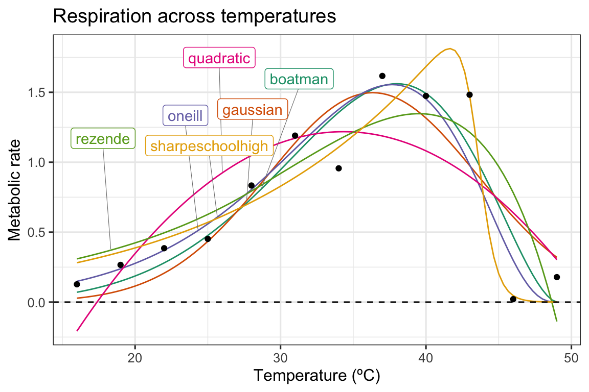
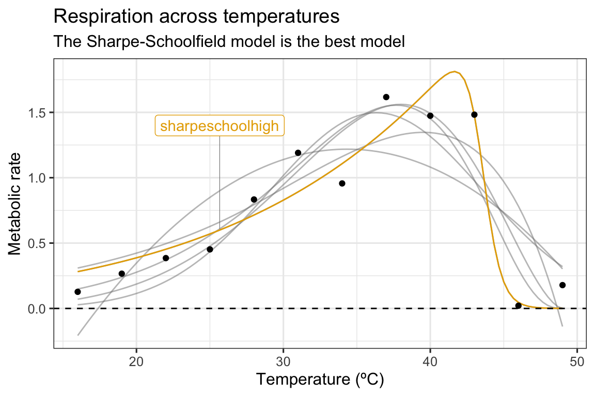
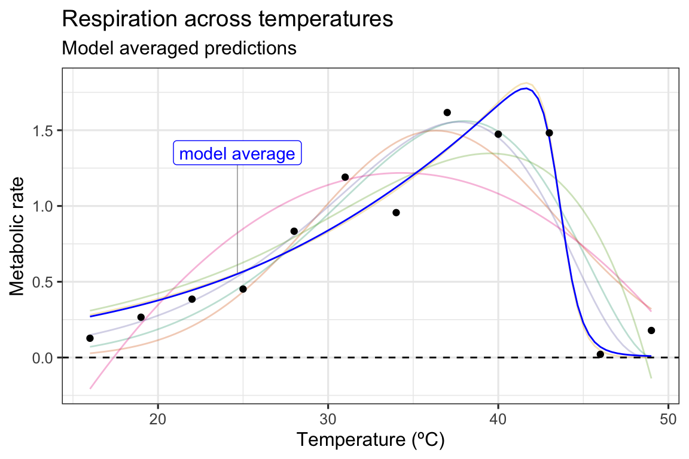

Fitting multiple models to a TPC: model selection and model averaging
Daniel Padfield
2020-06-10
Source:vignettes/model_averaging.Rmd
model_averaging.RmdKey things to consider
# load packages library(rTPC) library(nls.multstart) library(broom) library(tidyverse) library(ggrepel)
The easiest pipeline demonstrates how models can be fitted, parameters extracted, and predictions plotted to single or multiple curves using functions in rTPC, nls_multstart(), and purrr.
Here, we demonstrate how this pipeline can easily be extended to do (1) model selection where the model that best supports the data is chosen or (2) model averaging where multiple models are used to make predictions or estimating extra parameters, weighted by how well they fit to the data. Instead of picking all 23 model formulations to demonstrate these approaches, we picked 5 models with different shaped curves (see this vignette): boatman_2017(), gaussian_1987(), oneill_1972(), quadratic_2008(), rezende_2019(), and sharpeschoolhigh_1981()
We can demonstrate the model averaging process for these model formulations by taking a single curve from the example dataset rTPC - a dataset of 60 TPCs of respiration and photosynthesis of the aquatic algae, Chlorella vulgaris. We can plot the data using ggplot2.
# load in data data("chlorella_tpc") # keep just a single curve d <- filter(chlorella_tpc, curve_id == 1) # show the data ggplot(d, aes(temp, rate)) + geom_point() + theme_bw(base_size = 12) + labs(x = 'Temperature (ºC)', y = 'Metabolic rate', title = 'Respiration across temperatures')

The 5 models can then be fitted using the same approach as in the previous vignette, using list columns purrr::map() to fit and store multiple models in a data frame.
# fit five chosen model formulation in rTPC d_fits <- nest(d, data = c(temp, rate)) %>% mutate(boatman = map(data, ~nls_multstart(rate~boatman_2017(temp = temp, rmax, tmin, tmax, a,b), data = .x, iter = c(4,4,4,4,4), start_lower = get_start_vals(d$temp, d$rate, model_name = 'boatman_2017') - 10, start_upper = get_start_vals(d$temp, d$rate, model_name = 'boatman_2017') + 10, lower = get_lower_lims(d$temp, d$rate, model_name = 'boatman_2017'), upper = get_upper_lims(d$temp, d$rate, model_name = 'boatman_2017'), supp_errors = 'Y', convergence_count = FALSE)), gaussian = map(data, ~nls_multstart(rate~gaussian_1987(temp = temp, rmax, topt, a), data = .x, iter = c(4,4,4), start_lower = get_start_vals(d$temp, d$rate, model_name = 'gaussian_1987') - 10, start_upper = get_start_vals(d$temp, d$rate, model_name = 'gaussian_1987') + 10, lower = get_lower_lims(d$temp, d$rate, model_name = 'gaussian_1987'), upper = get_upper_lims(d$temp, d$rate, model_name = 'gaussian_1987'), supp_errors = 'Y', convergence_count = FALSE)), oneill = map(data, ~nls_multstart(rate~oneill_1972(temp = temp, rmax, ctmax, topt, q10), data = .x, iter = c(4,4,4,4), start_lower = get_start_vals(d$temp, d$rate, model_name = 'oneill_1972') - 10, start_upper = get_start_vals(d$temp, d$rate, model_name = 'oneill_1972') + 10, lower = get_lower_lims(d$temp, d$rate, model_name = 'oneill_1972'), upper = get_upper_lims(d$temp, d$rate, model_name = 'oneill_1972'), supp_errors = 'Y', convergence_count = FALSE)), quadratic = map(data, ~nls_multstart(rate~quadratic_2008(temp = temp, a, b, c), data = .x, iter = c(4,4,4), start_lower = get_start_vals(d$temp, d$rate, model_name = 'quadratic_2008') - 0.5, start_upper = get_start_vals(d$temp, d$rate, model_name = 'quadratic_2008') + 0.5, lower = get_lower_lims(d$temp, d$rate, model_name = 'quadratic_2008'), upper = get_upper_lims(d$temp, d$rate, model_name = 'quadratic_2008'), supp_errors = 'Y', convergence_count = FALSE)), rezende = map(data, ~nls_multstart(rate~rezende_2019(temp = temp, q10, a,b,c), data = .x, iter = c(4,4,4,4), start_lower = get_start_vals(d$temp, d$rate, model_name = 'rezende_2019') - 10, start_upper = get_start_vals(d$temp, d$rate, model_name = 'rezende_2019') + 10, lower = get_lower_lims(d$temp, d$rate, model_name = 'rezende_2019'), upper = get_upper_lims(d$temp, d$rate, model_name = 'rezende_2019'), supp_errors = 'Y', convergence_count = FALSE)), sharpeschoolhigh = map(data, ~nls_multstart(rate~sharpeschoolhigh_1981(temp = temp, r_tref,e,eh,th, tref = 15), data = .x, iter = c(4,4,4,4), start_lower = get_start_vals(d$temp, d$rate, model_name = 'sharpeschoolhigh_1981') - 10, start_upper = get_start_vals(d$temp, d$rate, model_name = 'sharpeschoolhigh_1981') + 10, lower = get_lower_lims(d$temp, d$rate, model_name = 'sharpeschoolhigh_1981'), upper = get_upper_lims(d$temp, d$rate, model_name = 'sharpeschoolhigh_1981'), supp_errors = 'Y', convergence_count = FALSE)))
The predictions of each model can be estimated using broom::augment(). This can be done on all models at once after the models are stacked into long format. To create a smooth curve fit, the predictions are done on a new temperature vector that has 100 points over the temperature range. The predictions for each model formulation are then visualised in ggplot2.
# stack models d_stack <- select(d_fits, -data) %>% pivot_longer(., names_to = 'model_name', values_to = 'fit', boatman:sharpeschoolhigh) # get predictions using augment newdata <- tibble(temp = seq(min(d$temp), max(d$temp), length.out = 100)) d_preds <- d_stack %>% mutate(., preds = map(fit, augment, newdata = newdata)) %>% select(-fit) %>% unnest(preds) # take a random point from each model for labelling d_labs <- filter(d_preds, temp < 30) %>% group_by(., model_name) %>% sample_n(., 1) %>% ungroup() # plot ggplot(d_preds, aes(temp, .fitted)) + geom_line(aes(col = model_name)) + geom_label_repel(aes(temp, .fitted, label = model_name, col = model_name), fill = 'white', nudge_y = 0.8, segment.size = 0.2, segment.colour = 'grey50', d_labs) + geom_point(aes(temp, rate), d) + theme_bw(base_size = 12) + theme(legend.position = 'none') + labs(x = 'Temperature (ºC)', y = 'Metabolic rate', title = 'Respiration across temperatures') + geom_hline(aes(yintercept = 0), linetype = 2) + scale_color_brewer(type = 'qual', palette = 2)

As can be seen in the above plot, there is some variation in how the different model formulations fit to the data. We can use a information theoretic approach to compare between different models, using measures of relative model fit - such as AIC, BIC, and AICc (AICc correcting for small sample size). Which measure is most appropriate is going to be determined by the question being answered. AIC and BIC are both returned by broom::glance(), and AICc can be added using MuMIn::AICc()
d_ic <- d_stack %>% mutate(., info = map(fit, glance), AICc = map_dbl(fit, MuMIn::AICc)) %>% select(-fit) %>% unnest(info) %>% select(model_name, sigma, AIC, AICc, BIC, df.residual) d_ic #> # A tibble: 6 x 6 #> model_name sigma AIC AICc BIC df.residual #> <chr> <dbl> <dbl> <dbl> <dbl> <int> #> 1 boatman 0.292 10.0 26.8 12.9 7 #> 2 gaussian 0.327 11.8 17.5 13.7 9 #> 3 oneill 0.266 7.38 17.4 9.81 8 #> 4 quadratic 0.408 17.1 22.8 19.0 9 #> 5 rezende 0.362 14.8 24.8 17.2 8 #> 6 sharpeschoolhigh 0.198 0.350 10.3 2.77 8
In this instance, AICc score will be used to compare between models. For a model selection approach, the model with the lowest AICc score is chosen as the model that best supports the data. In this instance, it is the Sharpe-Schoolfield model.
# filter for best model best_model = filter(d_ic, AICc == min(AICc)) %>% pull(model_name) best_model #> [1] "sharpeschoolhigh" # get colour code col_best_mod = RColorBrewer::brewer.pal(n = 6, name = "Dark2")[6] # plot ggplot(d_preds, aes(temp, .fitted)) + geom_line(aes(group = model_name), col = 'grey50', alpha = 0.5) + geom_line(data = filter(d_preds, model_name == best_model), col = col_best_mod) + geom_label_repel(aes(temp, .fitted, label = model_name), fill = 'white', nudge_y = 0.8, segment.size = 0.2, segment.colour = 'grey50', data = filter(d_labs, model_name == best_model), col = col_best_mod) + geom_point(aes(temp, rate), d) + theme_bw(base_size = 12) + theme(legend.position = 'none') + labs(x = 'Temperature (ºC)', y = 'Metabolic rate', title = 'Respiration across temperatures', subtitle= 'The Sharpe-Schoolfield model is the best model') + geom_hline(aes(yintercept = 0), linetype = 2)

For a model averaging approach, predictions and parameters from the models are averaged. In ecology, this is usually done based on each model’s weighting. The best supported model’s predictions are taken into account more than the least supported. Often the number of models is reduced by setting a cut-off for the difference in whatever information criterion metric is being used. A common approach is to only keep models within \(\Delta 2 AIC\) of the best model.
# get model weights # filtering on AIC score is hashtagged out in this example d_ic <- d_ic %>% # filter(d_ic, aic - min(aic) <= 2) %>% mutate(., weight = MuMIn::Weights(AICc)) select(d_ic, model_name, weight) %>% arrange(., desc(weight)) #> # A tibble: 6 x 2 #> model_name weight #> <chr> <mdl.wght> #> 1 sharpeschoolhigh 0.9424218660 #> 2 oneill 0.0280227559 #> 3 gaussian 0.0267589370 #> 4 quadratic 0.0018576632 #> 5 rezende 0.0006905407 #> 6 boatman 0.0002482372 # calculate average prediction ave_preds <- left_join(d_preds, select(d_ic, model_name, weight)) %>% group_by(temp) %>% summarise(., .fitted = sum(.fitted*weight)) %>% ungroup() %>% mutate(model_name = 'model average') #> Joining, by = "model_name" #> `summarise()` ungrouping output (override with `.groups` argument) # create label for averaged predictions d_labs <- filter(ave_preds, temp < 30) %>% sample_n(., 1) # plot these ggplot(d_preds, aes(temp, .fitted)) + geom_line(aes(col = model_name), alpha = 0.3) + geom_line(data = ave_preds, col = 'blue') + geom_label_repel(aes(label = model_name), fill = 'white', nudge_y = 0.8, segment.size = 0.2, segment.colour = 'grey50', data = d_labs, col = 'blue') + geom_point(aes(temp, rate), d) + theme_bw(base_size = 12) + theme(legend.position = 'none') + labs(x = 'Temperature (ºC)', y = 'Metabolic rate', title = 'Respiration across temperatures', subtitle= 'Model averaged predictions') + geom_hline(aes(yintercept = 0), linetype = 2) + scale_color_brewer(type = 'qual', palette = 2)

In this example, as is obvious from the model weights, the Sharpe-Schoolfield model is overwhelmingly the most supported. This plays out in the plot, with the predictions deviating very little from the predictions based on the Sharpe-Schoolfield model.
Model averaging can also be applied to estimated extra parameters, such as optimum temperature and maximum rate.
# calculate estimated parameters params <- d_stack %>% mutate(., params = map(fit, est_params)) %>% select(-fit) %>% unnest(params) # get averaged parameters based on model weights ave_params <- left_join(params, select(d_ic, model_name, weight)) %>% summarise(., across(rmax:skewness, function(x){sum(x*.$weight)})) %>% mutate(model_name = 'model average') #> Joining, by = "model_name" # show them bind_rows(select(params, model_name, rmax:skewness), ave_params) %>% mutate_if(is.numeric, round, 2) #> # A tibble: 7 x 11 #> model_name rmax topt ctmin ctmax e eh q10 thermal_safety_… #> <chr> <dbl> <dbl> <dbl> <dbl> <dbl> <dbl> <dbl> <dbl> #> 1 boatman 1.56 38 0 48.1 0.72 1.74 2.48 10.1 #> 2 gaussian 1.5 36.3 18.7 54.0 0.68 1.08 2.37 17.6 #> 3 oneill 1.55 37.7 12.1 47.4 0.72 1.74 2.48 9.69 #> 4 quadratic 1.22 34.3 17.4 51.3 0.68 1.08 2.37 16.9 #> 5 rezende 1.35 39.5 -3.41 48.7 0.72 1.74 2.48 9.14 #> 6 sharpesch… 1.81 41.6 2.54 45.6 0.580 11.5 2.06 3.91 #> 7 model ave… 1.8 41.4 3.26 45.8 0.59 10.9 2.08 4.47 #> # … with 2 more variables: tolerance_range <dbl>, skewness <dbl>